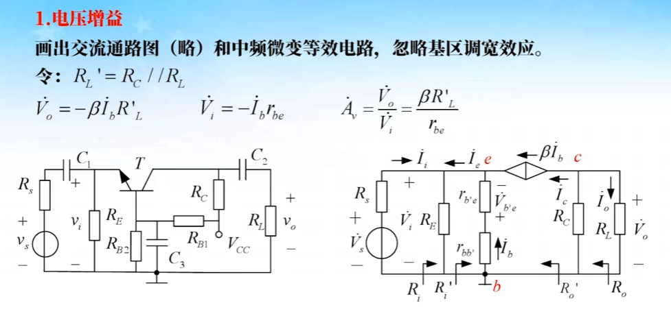

02 双极型晶体管
双极性晶体管
放大电路基本知识
基本共射放大电路原理
直流通路与交流通路
直流通路图
构成原则：
- 电容视为开路。
- 电感线圈视为短路，保留电感线圈上的电阻（近似分析时可忽略）。
- 交流电压源视为短路，保留其内阻。
- 交流电流源视为开路，保留其内阻。
- 工作在击穿区的稳压二极管，等效为等值的直流电压源 (正偏普通二极管可等效为 0.7V（硅）的直流电压源)。
交流通路图
构成原则：
-
容量大的电容（如耦合电容、旁路电容）视为交流短路；容量小的电容（如晶体管结电容、分布电容等）视为交流开路
-
感抗大的电感线圈视为交流开路；感抗小的电感线圈视为交流短路
-
直流电压源视为交流短路，如有内阻则保留其内阻
-
直流电流源视为交流开路，如有内阻则保留其内阻。
-
工作在击穿区的稳压二极管，视为交流短路（考虑击穿区动态电阻时，保留该电阻)
正偏的二极管，视为交流短路。若需考虑交流电阻时，保留交流电阻
共射放大电路图解分析
图解直流分析

图解交流分析

- 交流负载线斜率：\(- \frac 1 {R_C//R_L}\)
- 交流负载过 Q 点
交流信号分析

- 交流信号的移动轨迹实在交流负载线上
- 交流输入信号与输出信号反相
- 通过信号幅值可计算电流和电压的增益（左右两个图的 x 轴信号曲线）
静态工作点与波形失真

- 工作点过高（\(I_{BQ}\)、\(I_{CQ}\) 大）输出电压易产生饱和失真（NPN 管，底部失真）
- 工作点过低（\(I_{BQ}\)、\(I_{CQ}\) 小）输出电压易产生截止失真（NPN 管，顶部失真）
动态输出范围

- 意思是：输出波形没有明显失真的最大电压/电流幅值
- 交流负载线上 Q-M、Q-N 中对应横轴电压（纵轴电流）较小的一个值
- Q 点应选择交流负载线上放大区的中间点，可以得到最大的、无明显饱和失真及截止失真的信号
晶体管模型
晶体管放大状态简化直流模型

用简化模型计算静态工作点
晶体管放大状态交流小信号模型
-
晶体管混合 π 模型

-
简化高频混合 π 模型

-
简化中低频混合 π 模型

-
中低频混合 π 模型的参数

- \(V_A\) 为厄尔利电压（基区调宽效应）
-
中低频 H 参数模型

直流偏置电路
固定偏置电路
固定偏置电路是最简单的、为晶体管提供静态工作点的电路形式。
当电源电压 \(V_{CC}\) 较高时，晶体管基极电流 \(I_{BQ}\) 由输入偏置电阻 \(R_B\) 决定。
这个方式不稳定，参数会随着温度而变化。


例题


- \(V_{CES}\) 为饱和压降

分压式负反馈偏置电路

静态工作点的近似计算
静态工作点的精确计算


分压式负反馈偏置电路的应用
基本共射电路的等效分析
分析步骤
- 确定放大电路的静态工作点（ \(I_{BQ}\)、\(I_{CQ}\)、\(I_{CEQ}\) 等）
- 求出 Q 点处的混合 π 模型参数 \(r_{b'e}、r_{ce}、g_m\)（或 H 参数的 \(r_{be}\)）
- 画出放大电路的交流通路图，将交流通路图中的晶体管用低频混合 π 模型 （或 H 参数模型）代替，得到小信号交流等效电路（微变等效电路）
- 求解放大电路的交流性能指标：\(A_v、A_i、R_i、R_o\) 等
直流分析

交流分析
-
画出交流通路图
-
求混合 π 模型的参数

-
求电压增益
\[ \dot{A}_v = \frac{\dot{V}_o}{\dot{V}_i} = \frac{-g_m \dot{V}_{b'e} R_L'}{\dot{V}_{b'e} \frac{r_{bb'}}{r_{b'e}} + \dot{V}_{b'e}} = \frac{-g_m R_L'}{\frac{r_{bb'}}{r_{b'e}} + 1} = \frac{-g_m r_{b'e} R_L'}{r_{bb'} + r_{b'e}} = -87.5 \]

-
求 H 参数模型参数

放大电路的静态工作点稳定问题
有射极电阻的共射电路分析


分析举例


补充（深负反馈）：
\[
\dot{A}_v = -\frac{\beta R_L'}{r_{be} + (\beta + 1)R_E} \approx -\frac{R_L'}{R_E} = -2.8
\]

晶体管放大电路三种基本组态
共集电路等效分析
直流分析
-
共集放大电路

-
直流分析

交流分析
-
电压增益与电流增益（🌟）

-
输入电阻

- 共集电路，输入电阻较大，且和负载电阻有关！
-
输出电阻

- 共集电路，输出电阻很小（几十Ω），且与信号源电阻有关！
分析举例
特点与应用
特点：
- 高输入阻抗
- 低输入阻抗
- 电流增益较大
- 电压增益同相且小于 1
应用：
- 作为多级放大的输入级，有较高的输入阻抗
- 作为多级放大的中间隔离级，减小后级较小的输入阻抗对前级增益的影响
- 作为多级放大的输出级，提供较小的输出阻抗，提提高带负载能力
共基电路等效分析
直流分析（略）

交流分析
-
电压增益

-
电流增益
-
输入输出电阻

分析举例

特点：
- 低输入阻抗
- 电压增益和输出阻抗与共射放大电路相同，但为同相放大
- 电流增益小于 1
应用：基放大电路多用于高频段电压放大（详见第四章）
三种组态电路特点对比
直流偏置方式

电压增益

电流增益

输入阻抗

输出阻抗

高频特性与应用
电流源及其应用
电流源的基本要求及晶体管电流源
基本镜像电流源
后面发现不考，这一节就不记了。
差分放大电路
差放电路结构与功能
温度漂移
电路的组成

共模信号与差模型号
-
共模信号
-
差模信号

-
共模抑制比 \(K_{CMK}(CMRR)\)：见上图
双电源长尾式差放
电流源射极偏置差放

差放静态分析及转移特性
长尾式差放静态分析（估算）
- \(V_{CEQ1}=V_{CC}- \frac 1 2 R_{C}I_{EE} + V_{BE}\)，其中 \(V_{BE}\) 是因为基极电位为零，发射极电位为 \(-V_{BE}\)
电流源偏置差分静态分析（估算）
差放的直流转移特性

差分输入线性范围扩展
差放的交流小信号差模分析
差模和共模信号的分解
输入、输出方式

双入双出


- 对于（2）因为交流时，\(V_{E}\) 与 \(V_{EE}\) 之间没有电流流过，所以 \(R_{id}=2r_{be}\)
双入单出

差放的交流小信号共模分析
共模等效电路
共模电压增益
共模输入输出电阻
共模抑制比
差分电路例题


功率放大电路
特点及分类
要求
分类
互补对称功率放大电路简介
- OTL: Output Transformer Less
- OCL: Output Capacitor Less
OCL、OTL 工作原理
OCL 工作原理
- OCL 双电源供电
交越失真及消除
- 乙类电路主要问题：由于晶体管有死区电压，放大电路有交越失真
OTL 工作原理
OCL、OTL 参数分析
-
输出功率：
\[ P_o = \frac{V_{om}}{\sqrt{2}} \frac{I_{om}}{\sqrt{2}} = \frac{V_{om}^2}{2R_L} \] -
电源供给功率：
\[ \begin{aligned} P_{DC} &= 2 \frac{1}{2\pi} \int_0^\pi V_{CC} I_{cm} \sin \omega t d(\omega t) \\ &= \frac{2 V_{CC} V_{om}}{\pi R_L} \end{aligned} \] -
效率：
\[ \begin{aligned} \eta &= \frac{P_o}{P_{DC}} = \frac{\pi}{4} \cdot \frac{V_{om}}{V_{CC}} \\ \eta_{\max} &\approx \frac{\pi}{4} \approx 78.5\% \end{aligned} \] -
晶体管损耗：
\[ \begin{aligned} P_{T1} + P_{T2} &= P_{DC} - P_o\\ &= \frac{2V_{CC}}{\pi} \frac{V_{om}}{R_L} - \frac{V_{om}^2}{2R_L}\\ P_{T1} &= P_{T2} = \frac{V_{CC}}{\pi} \frac{V_{om}}{R_L} - \frac{V_{om}^2}{4R_L}\\ P_{T1 \max} &= P_{T2 \max} = \frac{V_{CC}^2}{\pi^2 R_L}\\ P_{T1 \max} &= P_{T2 \max} \approx 0.2 P_{o \max}\\ \end{aligned} \] -
晶体管选择：
- 集电极最大允许电流：\(I_{CM} \geq \frac{V_{CC}}{R_L}\)
- 基极开路时 C、E 间击穿电压：\(V_{(BR)CEO} \geq 2V_{CC}\)
- 晶体管的最大管耗：\(P_{CM} \geq 0.2P_{o \max}\)